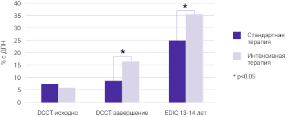

Диабетическая периферическая нейропатия (ДПН) — самое частое осложнение сахарного диабета — повышает риск 1:
ДПН ー предиктор развития 2:
Каждый 4-й пациент с сахарным диабетом страдает от болевой формы диабетической нейропатии 1,3
Лицо на изображении
не является реальным пациентом
Лицо на изображении
не является реальным пациентом
Жалобы пациента:
Попробуйте облегчить болевой синдром и помочь пациенту вести комфортный образ жизни
Изучить анамнез
Попробовать
Вопрос 1
Коррекция гликемии и
модификация образа жизни
А.
Патогенетическое лечение
Б.
Симптоматическое лечение
В.
Все перечисленное
Г.
Интенсивная терапия** СД 1 типа эффективнее стандартной терапии*** снижала частоту развития ДПН через 13-14 лет после лечения5,6.
Следующий вопрос
Патогенетическое лечение
Согласно исследованиям, из изученных препаратов влияние на окислительный стресс при ДПН оказывала лишь АЛК4**
Оригинальные препараты АЛК с масштабной доказательной базой4:
Колющая боль и жжение
А.
Парестезии и онемение
Б.
Все перечисленное
В.
Технология быстрого высвобождения Тиоктацид® БВ обеспечивает:
15%
А.
58%
Б.
89%
В.
Боль при ДПН способствует функциональным нарушениям
актуальны вопросы эффективного обезболивания4
Один из препаратов 1-й линии терапии — оригинальный габапентин — Нейронтин® обладает хорошей переносимостью5,6**
24 часа
А.
2 недели
Б.
1 месяц
В.
Нейронтин® (габапентин) имеет нелинейную фармакокинетику, при назначении дозу титруют4
900 мг
А.
1800 мг
Б.
3600 мг
В.
Два варианта титрации препарата Нейронтин® при нейропатической боли4:
В зависимости от эффекта дозу постепенно доводят до максимальной — 3600 мг в сутки4
Полного обезболивания при ДПН добиться сложно4
Снижение боли **, 4:
О предполагаемой степени снижения интенсивности боли, например на 30‑50%
А.
Об ожидаемых сроках уменьшения интенсивности боли
Б.
О важности регулярного
мониторинга состояния
В.
Все перечисленное
Г.